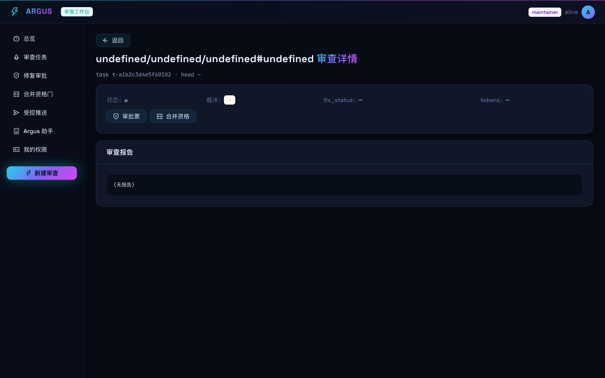
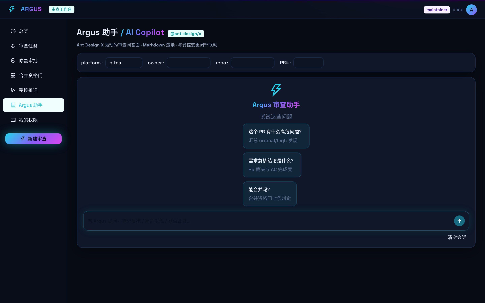
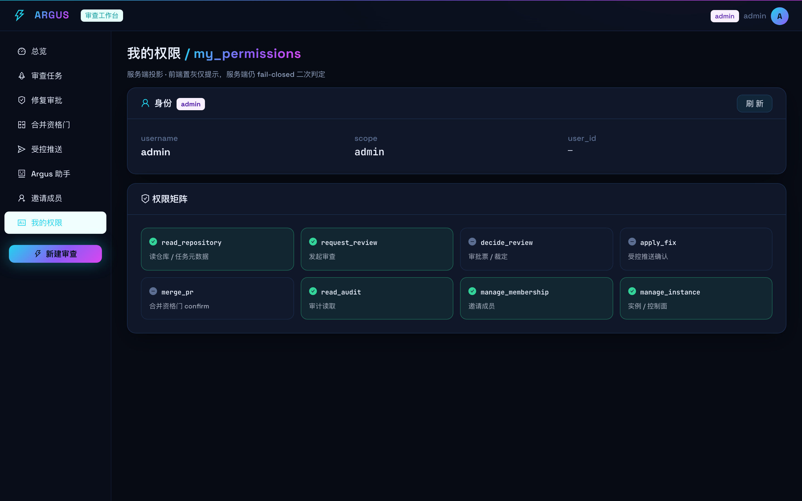

Workbench
界面：把复杂度摊在台面上
TypeScript + Ant Design 6 + Ant Design X。任务态势、审批票、合并向导、受控推送、AI 问答——所有写操作都在界面上走 preview → confirm。
界面实拍




权限分离：界面即证据
真二进制起服 + 真实登录会话抓拍。服务端投影，前端只做提示。


技术栈
TypeScript 5.9
strict 模式
React 19
React Router 7
Ant Design 6
暗色 token 定制
Ant Design X
Bubble / Sender / Prompts
git clone https://github.com/yi-nology/argus-frontend.git
cd argus-frontend && npm install && npm run dev
# http://127.0.0.1:5177 · /api 代理到 argus-service :8899